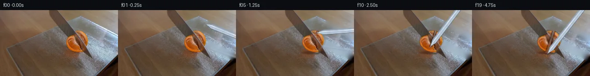

![首帧]()

Round 00
2026-11-05T20:50:45.696445+00:00像素候选变化代码 +277/−0inspection 更新
pixels 9777bdd48557cb74 · code 516c14bea6f5441f
查看本轮 generate.py 真实 diff
--- previous/generate.py
+++ current/generate.py
@@ -0,0 +1,277 @@
+#!/usr/bin/env python3
+"""PixelWorld-Text case 0040: knife slices a tangerine half on a glass board.
+
+Pure local pixel operations (numpy / PIL / scipy):
+ * frame 00 is the supplied first_frame.png, untouched;
+ * the raised knife and its glass reflection are removed by masked
+ neighbour-diffusion inpainting of the smooth board;
+ * the knife is a parametric tapered steel blade (with a blurred, dimmed
+ reflection) animated along a measured descent;
+ * the tangerine is built from real frame-00 fruit pixels, split along the
+ blade tip path into two pieces that translate apart as the cut proceeds.
+Run: python3 generate.py
+"""
+from pathlib import Path
+import numpy as np
+from PIL import Image, ImageDraw
+from scipy import ndimage
+from artifact_io import save
+
+CASE = Path(__file__).parent
+H, W = 144, 256
+
+rng = np.random.default_rng(7)
+
+# ---------------------------------------------------------------- load
+f0 = np.array(Image.open(CASE / 'first_frame.png').convert('RGB')).astype(np.float64)
+assert f0.shape == (H, W, 3)
+yy, xx = np.mgrid[0:H, 0:W].astype(np.float64)
+
+
+# ---------------------------------------------------------------- helpers
+def seg_layer(p0, p1, hw, tip_taper=0.0, soft=0.9):
+ """Feathered alpha layer for a thick segment (p0->p1), half-width hw.
+ tip_taper>0 makes the width grow linearly from 0 over that many px from p0."""
+ x0, y0 = p0
+ x1, y1 = p1
+ ux, uy = x1 - x0, y1 - y0
+ L = np.hypot(ux, uy)
+ ux, uy = ux / L, uy / L
+ dx, dy = xx - x0, yy - y0
+ s = dx * ux + dy * uy
+ perp = -dx * uy + dy * ux
+ width = np.full_like(s, hw)
+ if tip_taper > 0:
+ width = np.where(s < tip_taper, np.maximum(hw * s / tip_taper, 0.12), width)
+ d = np.abs(perp)
+ a = np.clip(width + soft - d, 0, 1)
+ a[(s < -soft) | (s > L + soft)] = 0
+ return a, s, perp, width, (ux, uy)
+
+
+def diffuse_inpaint(img, mask, iters=240):
+ """Laplace-style fill of masked pixels from fixed neighbours (edge pad)."""
+ arr = img.copy()
+ m = mask.astype(bool)
+ for _ in range(iters):
+ pad = np.pad(arr, ((1, 1), (1, 1), (0, 0)), mode='edge')
+ nb = (pad[:-2, 1:-1] + pad[2:, 1:-1] + pad[1:-1, :-2] + pad[1:-1, 2:]) * 0.25
+ arr[m] = nb[m]
+ return arr
+
+
+def over(dst, src, a):
+ """Alpha-over composite; a is HxW in [0,1]."""
+ a3 = a[..., None]
+ return dst * (1 - a3) + src * a3
+
+
+def polygon(points):
+ m = Image.new('L', (W, H), 0)
+ ImageDraw.Draw(m).polygon(points, fill=1)
+ return np.array(m, dtype=bool)
+
+
+def ellipse(cx, cy, rx, ry, soft=True):
+ d = ((xx - cx) / rx) ** 2 + ((yy - cy) / ry) ** 2
+ if soft:
+ return np.clip(1.25 - d, 0, 1)
+ return (d <= 1).astype(float)
+
+
+# ---------------------------------------------------------------- masks
+# original knife blade + reflection bands (to remove from the static base)
+blade0_a, *_ = seg_layer((195.0, 24.0), (257.0, 61.5), 8.0)
+refl0_a, *_ = seg_layer((192.0, 73.5), (253.0, 102.5), 8.5)
+knife_mask = (blade0_a > 0.02) | (refl0_a > 0.02)
+
… diff truncated; 190 more lines …